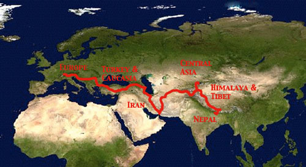

OverviewTo view pictures, travelogues or route details click on one of the route sections |
|
|
|  |
|
Countries cycled through...Europe - Switzerland, Liechtenstein, Austria, Italy, Slovenia, Croatia, Serbia, Romania, Bulgaria, Greece (3000km) Turkey & Caucasia - Turkey, Georgia, Azerbaijan (3600km) Iran (3900km) Central Asia - Turkmenistan, Uzbekistan, Tajikistan, Kyrgyzstan (4100km) Himalaya & Tibet - China (3000km) Nepal (100km) (Total distance - 17'751km) |